NaturaSpec Plus SN25494G1 · FLENS8 8° · 17 Aug 2026
Selawik and Hotham Inlet: above-water Rrs
This is the 17 Aug 2026 field day run through the full fieldrrs pipeline:
71 scans at five stations, choppy water, and an overcast afternoon. LOC2 and LOC3 are
processed through the GIOP inversion and written up. Both are humic water
dominated by CDOM, with adg(443) of 2.7–4.0 m⁻¹, 3–12 times the
16 Aug Kotzebue stations.
5 stations71 scans · 36 water in final productssun 26–36° elevationglint: NIR similarity (Ruddick et al. 2006)ρ: Mobley 1999, angle-matched
Stations
Numbered in time order. Shape is the core-band (450–700 nm) consistency
of the amplitude-normalised mean, i.e. how well the spectral shape is known. Amplitude
is real scan-to-scan variability in brightness.
Station
Where
UTC
water n
shape
ampl.
Rrs443
Rrs555
Rrs665
Rrs865
Status
LOC1
Selawik R., drifting 308 m
21:09
6
4.8 %
13.1 %
0.00182
0.00301
0.00258
0.00031
usable, caveated
LOC2
Selawik village
21:41
7
3.9 %
14.1 %
0.00084
0.00264
0.00395
0.00070
fully processed
LOC3
Selawik Lake, west
22:16
16
6.8 %
24.3 %
0.00155
0.00325
0.00387
0.00069
fully processed
LOC4
Hotham Inlet
01:21
4
1.6 %
8.6 %
0.00969
0.02431
0.02316
0.00486
tilt assumed 40°
LOC5
Hotham Inlet
02:16
3
2.3 %
17.9 %
0.00408
0.00598
0.00302
0.00035
n = 3
16 Aug LOC1
Kotzebue, reference
—
12
1.9 %
12.6 %
0.00247
0.00863
0.00543
0.00071
previous day
Rrs in sr⁻¹, glint-corrected final product (FINAL_Rrs.csv). The UTC times for LOC4 and LOC5 fall on 18 Aug UTC (evening of 17 Aug local).
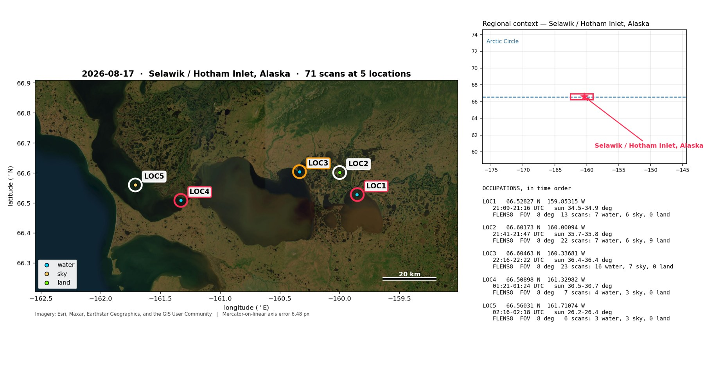
Where. LOC1–3 lie along the Selawik River and Selawik Lake (brown, humic water).
LOC4–5 are in Hotham Inlet toward Kotzebue Sound, 45–83 km west.
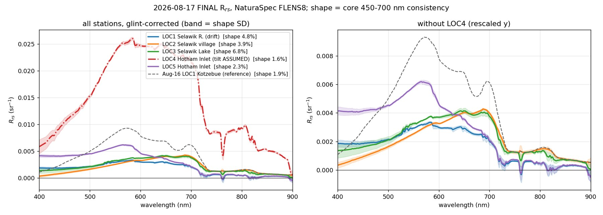
Three water types in one day. LOC2 and LOC3 (humic) have depressed blue and
a red maximum at 650–690 nm. LOC5 (Hotham Inlet) has a green peak at 565 nm, similar to
Kotzebue on 16 Aug. LOC4 is 4× LOC5 and 8–9× LOC2/LOC3 at 555 nm, with a strong 810 nm feature, i.e. very
high sediment; its absolute level rests on an assumed view angle.
Fully processed
LOC2 and LOC3: the Selawik stations
LOC2 · Selawik village
66.60173 N 160.00094 W · 21:41–21:47 UTC · calm, at the dock
adg(443)
2.66 m⁻¹ · ±36 % per scan
Sdg fitted
0.0084 nm⁻¹
bbp(443)
0.046 m⁻¹ · shape unconstrained
best fit RMS
13.1 % free Sdg, η
The standard GIOP-DC configuration fails. With Sdg fixed at 0.018 the fit reaches χ²ν = 47
(RMS 30 %) and drives Mφ to zero: it puts all absorption into CDOM and still misses.
The fit needs a much flatter CDOM slope: 0.0084 nm⁻¹, against the usual 0.014–0.020. The free and max-freedom fits agree
on adg(443) to 0.4 %. Quote about 2.7 m⁻¹ with a factor-1.5 uncertainty, 3.4–8× the 16 Aug Kotzebue stations.
Chlorophyll is present but not measurable. A dip near 670 nm between maxima at 650 and 690 nm is
chlorophyll-a red absorption. Mφ runs from 0 to 0.68 across configurations and the seed has no self-consistent fixed point.
The fit is still poor. The best fit misses by 13 % RMS and η sits on its −1 bound, so the composition is model-dependent.
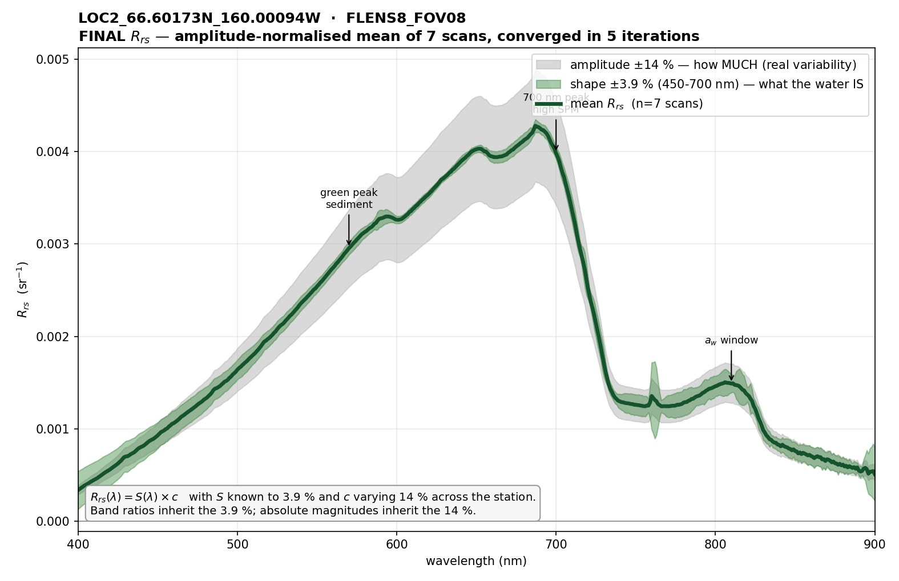
Final Rrs, 7 scans. Shape known to 3.9 %. The arrow labels are fixed template annotations, not interpretations of this water.
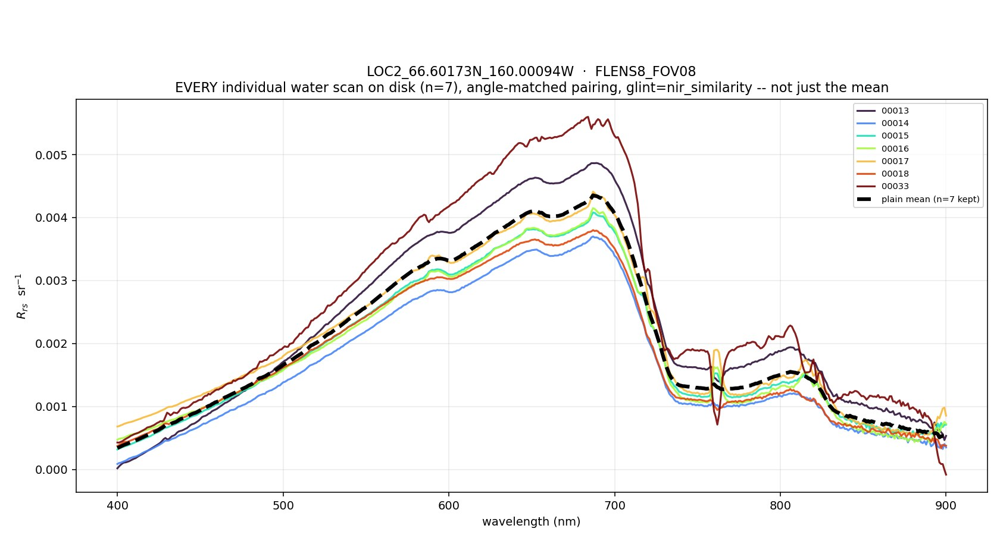
Every scan. 00013–18 are tight. 00033 (58° view, near the bank) is about 25 % brighter with the same shape.
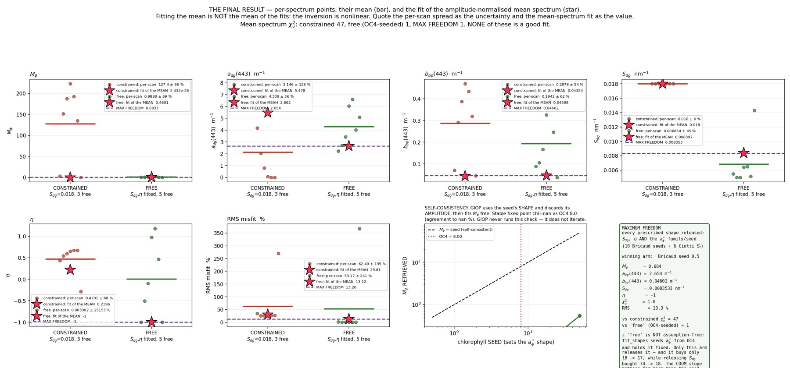
GIOP result. Constrained (red) vs free (green) per scan and for the mean spectrum. The green "maximum freedom" text box contains hard-coded 16 Aug numbers (74 → 18); ignore it.
LOC3 · Selawik Lake, west
66.60463 N 160.33681 W · 22:16–22:22 UTC · open-lake chop
adg(443)
3.3–4.0 m⁻¹ · ±55 % per scan
Sdg fitted
0.0076–0.0078 nm⁻¹
bbp(443)
0.11–0.14 m⁻¹ · ≈2.5× LOC2
best fit RMS
2.2–3.9 % max-free / free
Same CDOM regime as LOC2, 15 km away. The fitted slope (0.0076–0.0078) matches LOC2, so the flat slope belongs to this
water, or to how the model handles it, rather than to one bad fit.
More particles. bbp(443) is about 2.5× LOC2, which fits the brighter 550–700 nm signal and the
wind-mixed open lake. This fit is good (2–4 % RMS).
The blue end is where the uncertainty lives. Per-scan Rrs(400) varies 6×, while 550–700 nm stays consistent.
Blue is where ρ·Lsky error dominates, and adg is set there, so it carries about ±50 % per scan.
Do not quote chlorophyll (Mφ 3–8; fixed point at chl 47.8 against OC4's 7.2). Depth was not
measured, so a bottom contribution can't be excluded, although no photo shows the bottom.
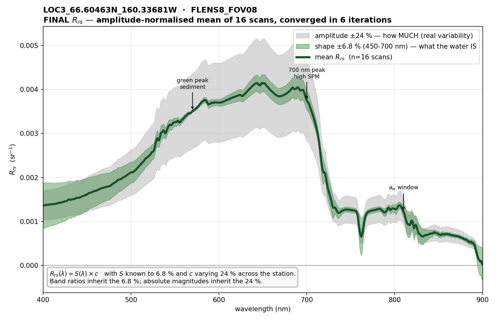
Final Rrs, 16 scans. Shape known to 6.8 %; note the widening band below 450 nm.
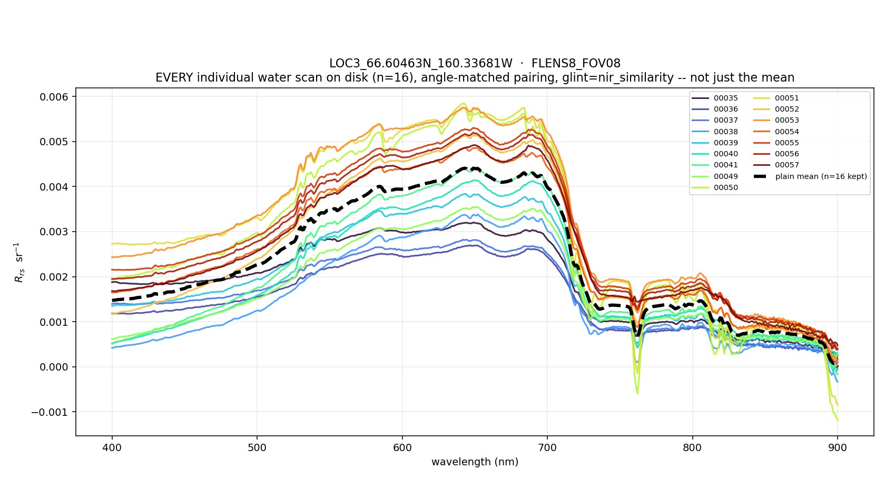
Every scan. 00049–57 sit higher than 00035–41. 00038 and 00052 were glint-affected and corrected.
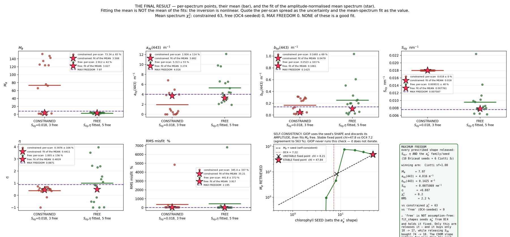
GIOP result. Freeing Sdg takes the RMS from 35 % to 3.9 %. The same stale text box caveat applies.
Requested checks
LOC5 glint correction and LOC4 assumed tilt
LOC5: glint correction kept
NIR similarity removes a flat −0.0027 sr⁻¹ (spectral SD 6×10⁻⁵, flat to about 2 %), which is the signature of an additive surface term.
Rrs(555) goes from 0.0086 to 0.0060 (−30 %) and the NIR collapses to about 0.0004.
Why it is right: scan-to-scan amplitude scatter halves (33.6 % → 17.9 %) and shape improves slightly (2.7 → 2.3 %).
Glint varied between scans, and removing it pulls the scans together.
LOC4: processed with tilt = 40°
The tilt sensor logged nothing, so derived copies in FLENS8_FOV08_ASSUMED_TILT40/ carry the protocol view angle.
The raw files are untouched. The 4 water scans agree to 1.6 % in shape.
Caveat: glint correction removed −0.014 sr⁻¹, 5× LOC5's offset. That points to ρ·Lsky being under-subtracted
(an arm is in the sky photos, and the angle is assumed). The shape is usable; treat the absolute level as tentative.
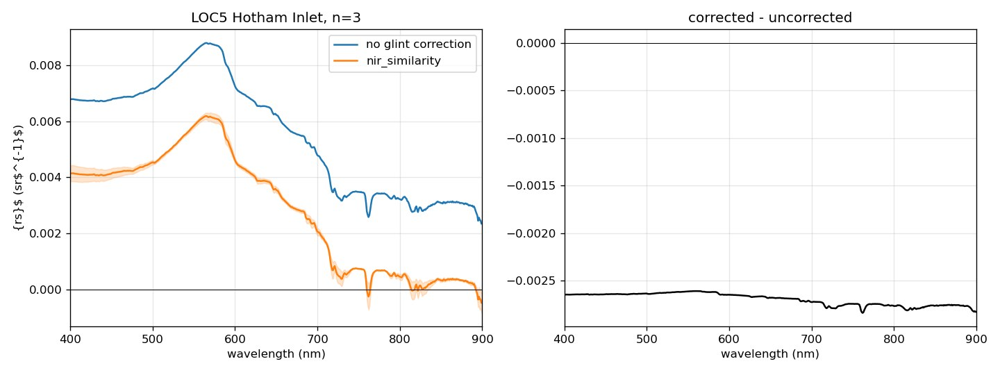
LOC5 before and after. Left: uncorrected (blue) vs corrected (orange). Right: the difference, nearly flat across 400–900 nm.
Rrs only, GIOP not triaged
LOC1, LOC4 and LOC5
Final spectrum (left) and every individual water scan (right) for each station.
LOC1 · Selawik River, drifting
66.52827 N 159.85315 W · 21:09–21:16 UTC · drifted 308 m
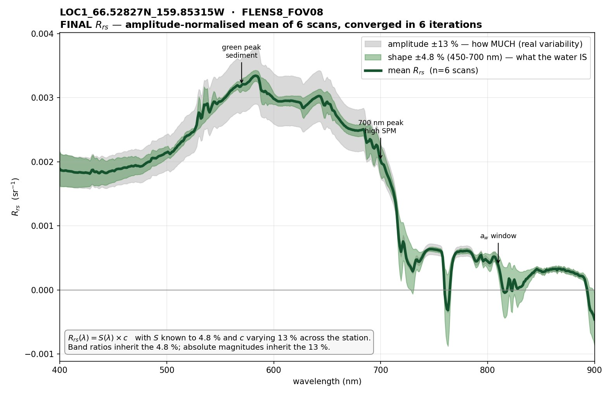
Final Rrs, 6 scans: maximum at 583 nm, shape 4.8 %.
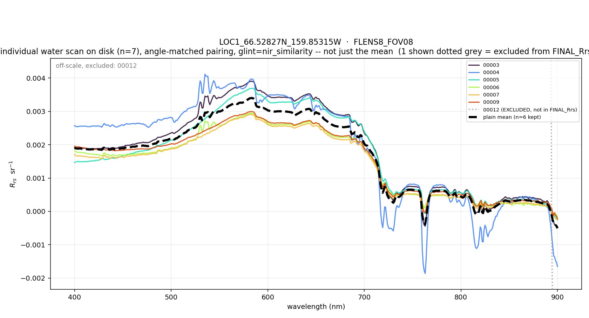
Every scan. 00012 (bad white reference) is excluded and off-scale. 00004 dips negative in the 720/760/820 nm atmospheric bands, a sky/panel mismatch; it is the noisiest of the six.
LOC4 · Hotham Inlet, tilt assumed 40°
66.50898 N 161.32982 W · 01:21–01:24 UTC · hand-held
Every scan. The 4 scans are parallel. The flat 580–700 nm plateau and the 810 nm peak point to very high sediment. 00059 is about 15 % brighter. The absolute level depends on the assumed angle.
LOC5 · Hotham Inlet
66.56031 N 161.71074 W · 02:16–02:18 UTC · sunlit chop
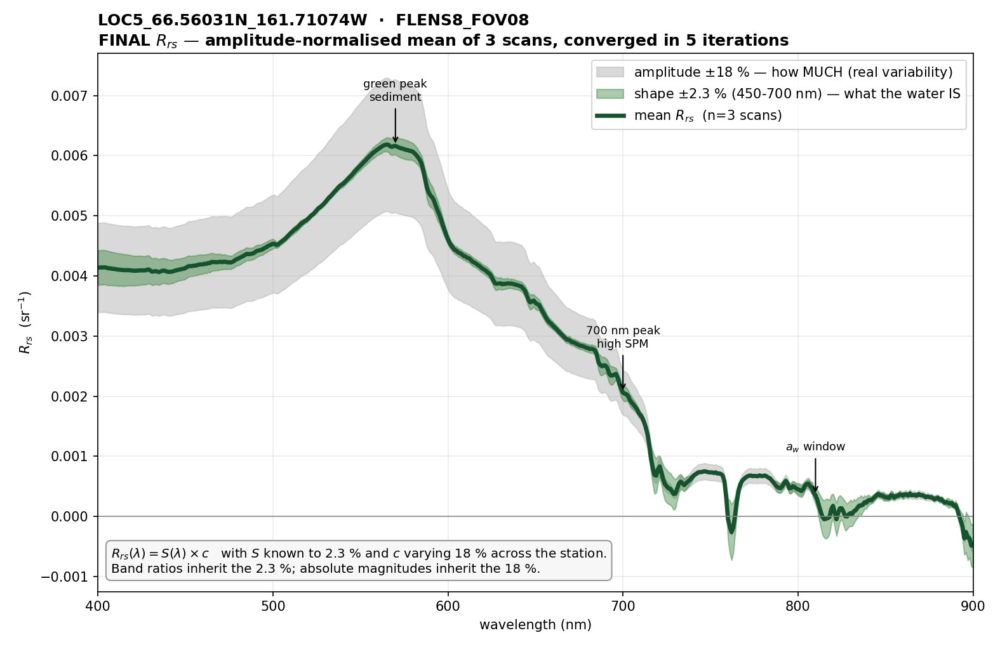
Final Rrs, 3 scans, glint-corrected: green peak at 565 nm, shape 2.3 %.
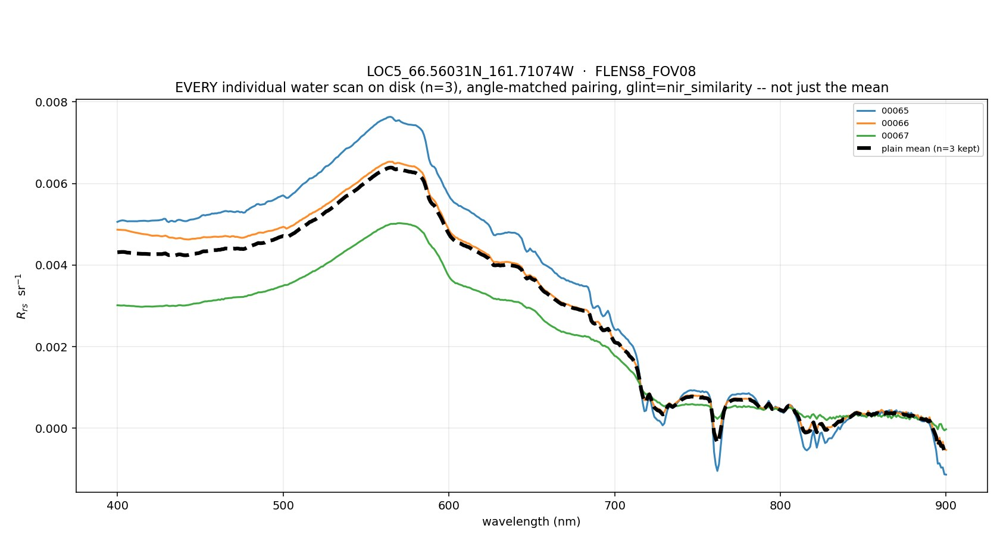
Every scan. All three share one shape. 00067 is the dimmest (the 17.9 % amplitude spread). 00065 shows the same atmospheric-band dips as LOC1 00004.
What the camera saw
These photos settled several classification calls. Each is the instrument's own frame; the red dot marks the 8° field of view.
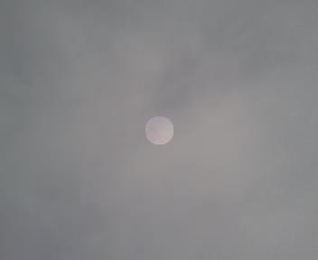
00001 overcast sky: grey cloud, no Rayleigh blue. The classifier first called these "land".
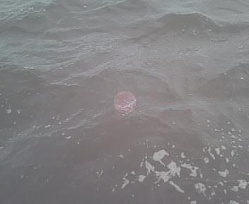
00007 LOC1 chop with whitecaps
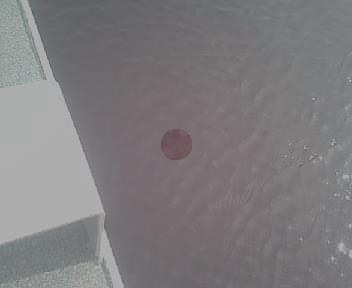
00016 LOC2 calm humic water at the dock
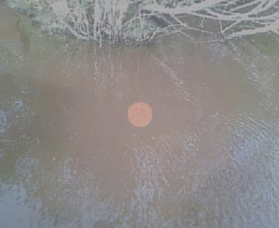
00028 water mirroring a willow bank: excluded as land
Fine structure at about 527 and 589 nm appears at several stations. It lines up with the Fe E and Na D solar
Fraunhofer lines, which suggests slight wavelength misregistration between the sky and water scans. Not verified; don't read these as water features.
Pipeline fixes made to process this day
Overcast sky was classified "land". classify() now accepts grey sky: no red edge, blue/green > 1, Lt/Lref > 0.3. All 60 16 Aug classifications are unchanged; 2 new tests fail when either half of the rule is removed.
Reflectance in percent: DARWin wrote Reflect. % for the evening scans, and verify_field_calcs read the raw column (a 99 % mismatch). Now 0.05–0.16 %.
Drifting stations: added --tol-m (clustering) and --max-span-m (analysis); defaults unchanged, and the report records any override.
Station numbering wrapped at midnight UTC; now by scan counter. The map now picks its own zoom and handles more than 3 stations (it had hit 14 GB of RAM).
Crash guards: blank tilt in the survey, a pinned parameter in the GIOP histogram, and the angle/footprint figure with no range or a single tilt.
Exclusions
00012 (LOC1): white reference taken on a dark target (Lref = 0.005), giving Rrs(555) = 0.21.
00019, 00020 (LOC2): water in the photos, but on the land/water threshold; left excluded.
00027–32, 00034 (LOC2): bank reflections and oblique shoreline views, classified land.